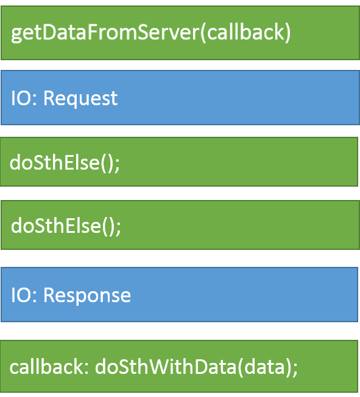

JavaScript is a single threaded, concurrent, non-blocking and asychronous programming language
The JavaScript engine runs inside an execution environment
such as the Browser or Node.js

This environment exposes many APIs to the JavaScript engine, such as the DOM or XMLHttpRequest (browser) or the Timers (both)

JavaScript has a concurrency model based on an event loop
 This model is quite different from models in other languages like C and Java
This model is quite different from models in other languages like C and Java
Browser APIs expose operations that can run in parallel
using a small number of threads
// to be called when data is available
function ajaxCallback() {
console.log(this.responseText);
}
// to be called every 10 ms
function timerCallback() {
console.log('tick');
}
setInterval(timerCallback, 10);
var ajax = new XMLHttpRequest();
ajax.addEventListener('load', ajaxCallback);
ajax.open('GET', 'https://api.github.com');
ajax.send();
Such operations result in a callback function
to be executed by the JavaScript runtime
When the Call Stack is empty, the Event Loop takes the first callback from the Event Queue and places it at the top of the Call Stack for execution

console.log('start');
setTimeout(function() {
console.log('setTimeout');
}, 0);
console.log('end');
// start, end, setTimeout
Each iteration of the event loop is called a tick
Browsers rendering engine executes in the same thread
as the JavaScript runtime
Rendering events have higher priority for execution
and will be fetched from the queue first
// what happens if we run this?
while (true) {}
The event loop will not fetch anything from the queue
if the call stack is not empty
A function is called a Callback when it is passed as an argument to another function for later execution
Callbacks can be invoked synchronously or asynchronously:
// synchronous callback
function isOdd(num) {
return num % 2;
}
var numbers = [1, 5, 8, 19, 232, 456];
var oddNumbers = numbers.filter(isOdd);
All
isOdd callback invocations end
// asynchronous callback
function ring() {
console.log('RING!');
}
setInterval(ring, 1000);
The invoking
setInterval function ends before the
ring callback is invoked
To handle I/O operations, two different API models exists:
function doSthWithData(data) { ... }
var data = getDataFromServer();
doSthWithData(data);
doSthElse();
doSthElse();

function doSthWithData(data) { ... }
getDataFromServer(doSthWithData);
doSthElse();
doSthElse();

JavaScript Object Notation is a lightweight data interchange format
It is based on a subset of JavaScript and widely used in web applications
// a plain js object
var obj = { ticker: 'AAPL', name: 'Apple Inc' };
// serialize an object into a JSON string
var serObj = JSON.stringify(obj);
console.log(typeof obj); // 'object'
console.log(typeof serObj); // 'string'
console.log(serObj); '{"ticker":"AAPL","name":"Apple Inc"}'
console.log(serObj.name); // undefined
// deserialize a JSON string into an object
var deSerObj = JSON.parse(serObj);
console.log(typeof deSerObj); // 'object'
console.log(deSerObj.name); // 'Apple Inc'
Introducing JSON
Allow loading data from the server without doing a page refresh
window.onload = function() {
fetchData(processResults);
function fetchData(cb) {
var ajax = new XMLHttpRequest();
ajax.addEventListener('load', cb);
ajax.open('GET', 'https://api.fixer.io/latest');
ajax.send();
}
// asynchronous callback
function processResults(event) {
var results = JSON.parse(event.currentTarget.response);
var usd = results.rates.USD;
var container = document.getElementById('rate');
container.innerHTML = '1 EUR = ' + usd + ' USD
';
}
}
The jQuery library has a full suite of Ajax capabilities available, which wrap around the browser XMLHttpRequest
$(document).ready(function() {
fetchData(processResults);
function fetchData(cb) {
$.ajax({
url: 'https://api.fixer.io/latest',
type: 'GET',
dataType: 'json',
success: cb
});
}
// asynchronous callback
function processResults(results) {
var usd = results.rates.USD;
var container = $('#rate');
container.html('1 EUR = ' + usd + ' USD
');
}
});
When using jQuery, there is no need to deserialize the JSON response
Handling errors inside async callbacks presents some challanges
/* this pattern DOES NOT work! */
try {
fetchData(processResults);
} catch (error) {
console.log('Caught Error: ', error);
}
function fetchData(cb) { .. }
function processResults(results) {
thrown new Error('something went wrong');
}
Application will blow up with Uncaught Error and fetchData call will not be present on stack trace
A separate error callback or callback error argument is required
to pass error details from inside an async callback
fetchData(processResults);
function fetchData(cb) {
$.ajax({
url: 'https://api.fixer.io/latest',
type: 'GET',
dataType: 'json',
success: function(results) { cb(null, results) },
error: function(request) { cb(request.responseText) }
});
}
function processResults(error, data) {
if (error) { // error handling }
// process data
}
Error first callbacks are a well know and established pattern


Two very important aspects of synchronous code
for function composition are:
try {
var result = func3(func2(funct1()));
} catch (error) {
// handle error
}
With async callbacks we have lost both aspects!

var result;
f1(function(err, data) {
if (err) {
// handle error
return;
}
result = data;
});
var f1 = function(cb) {
f2(function(error, result) {
if (error) { cb(error); }
f3(function(error, result) {
cb(null, result);
});
})
});
var results = [];
f1(function(err, result) {
if (err) { /* process error */ return; }
finished(result);
});
f2(function(err, result) {
if (err) { /* process error */ return; }
finished(result);
});
f3(function(err, result) {
if (err) { /* process error */ return; }
finished(result);
});
function finished(data) {
results.push(data);
if (results.length === 3) {
result = results[0] + results[1] + results[2] ;
}
}
An abstraction built on top of callbacks that gives us back
functional composition and error bubbling in the async world
A Promise object represents the eventual completion (or failure)
of an asynchronous operation and its resulting value
var result = f1()
.then(f2)
.then(f3)
.catch(function(error) {
// handle error
});
var result = Promise.all([f1(), f2(), f3()])
.then(function(results) {
return results[0] + results[1] + results[3];
}).catch(function(error) {
// handle error
});
Un-invert the chain of responsability:
instead of calling a passed callback, return a promise
A promise can be created using a constructor function,
after which it will be in one of the following states:
var promise = new Promise(function(resolve, reject) {
// do some async action, promise is in pending state
if (/* everything ok */) {
resolve(value); // promise will be resolved
} else {
reject(Error(value)); // promise will be rejected
}
});
The constructor receives an async function callback with methods for resolving or rejecting the promise
A promise is a an thenable object to which callbacks can be attached
promise.then(function(result) {
// do something with the result
}, function(err) {
// handle the error
});
then takes two optional arguments,
a callback for success and another for failure
Promises can be chained together to transform values or
run additional async actions one after another
var promise = doSomthingAsync();
promise
.then(doSomethingElseAsync)
.then(doSomethingElseAsync)
.then(doSomethingElseAsync, handleSpecificError)
.then(doSomethingElseAsync)
.then(doSomethingElseAsync)
.catch(handleGenericError)
.finally(alwaysRunThis);
Both specific and generic error handling callbacks can be attached to promises
Parallel promises fulfills when all of the promises have fulfilled or
rejects as soon as one of the promises rejects
var promise = Promise.all([
doSomethinAsync(),
doSomethinAsync(),
doSomethinAsync().catch(handleSpecificError,
doSomethinAsync(),
]).catch(handleGenericError);
It fulfills with an array of the values
and rejects with the reason from the first promise that rejected
It is possible to settle a promise as soon as one of many promises settles
var promise = Promise.race([
doSomethinAsync(),
doSomethinAsync(),
doSomethinAsync().catch(handleSpecificError,
doSomethinAsync(),
]).catch(handleGenericError);
Used when interested only in one of the results
Complex async flows can be acheived with promises

asyncThing1().then(function() {
return asyncThing2();
}).then(function() {
return asyncThing3();
}).catch(function(err) {
return asyncRecovery1();
}).then(function() {
return asyncThing4();
}, function(err) {
return asyncRecovery2();
}).catch(function(err) {
console.log("Don't worry about it");
}).then(function() {
console.log("All done!");
});
blue lines for promises that fulfill or red for ones that reject
It is possible to create settled promises
without actually performing any async action
function doSomethingAsync() {
if (/* some condition */) {
return new Promise(asyncCallback); // do async operation
}
// make sure we always return a promise, even if no async code has been executed
if (/* other condition */) {
return Promise.resolve(value);
} else {
return Promise.reject(new Error());
}
}
doSomethingAsync().then(onSuccess).catch(onError);
Since a promise is always returned, we can use then and catch callback methods